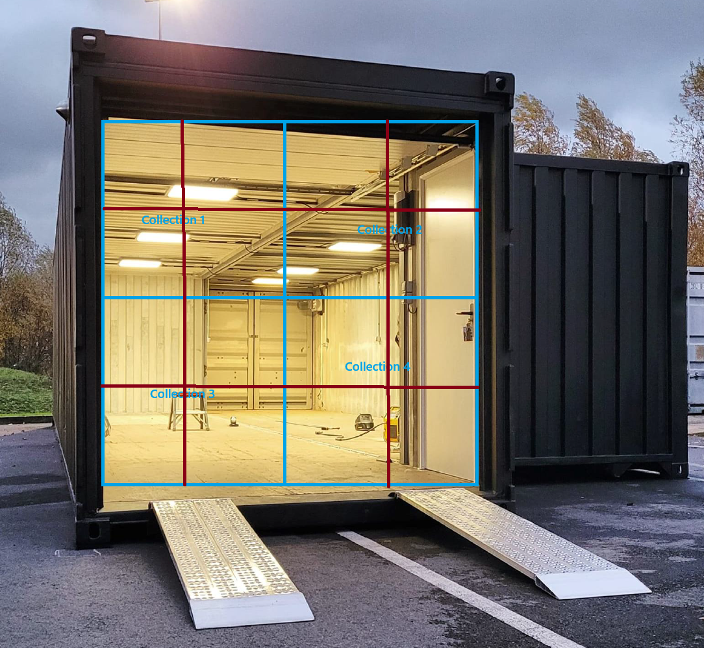

Les bases de données.
Comment ca marche l'internet ?
Le mode de fonctionnement est le suivant :
- Le navigateur envoie une requête http ou https au serveur web (en internet, extranet ou intranet)
- Le serveur web interprète la requête http ou https en utilisant un langage de programmation et
envoie
une/des requête(s) sql au serveur de base de données
- Le serveur de base de données renvoie des données (data) ou éventuellement une erreur
- Le serveur web interprète en utilisant un langage de programmation, l'erreur et renvoie les données
au
navigateur du client sous format html ou javascript
- Le navigateur du client affiche le html et exécute le langage javascript
Une base de quoi ?
Une base de données, c'est quoi ? Voyons ca comme un container:
Dans ce container il y'a quoi ?
Des plus petits container, appeler collection:
Dans lesquel nous trouvons des tables:

Mais y'a quoi dans une "tables" ?
Une table nous pouvons imaginer cela comme un tableau excel: Plusieurs colonne (column) avec des entêtes:

Comment interagir avec une base de données ?
Afin d'interagir avec une base de données nous allons avoir besoin d'un SGBDr cela signifie "Système de
Gestion
de Base de Données relationnel". Un SGBDr est un logiciel qui permet de stocker, organiser et gérer des
données
de manière structurée dans une base de données. Certains exemples de SGBD bien connus sont MySQL,
PostgreSQL,
Oracle Database et Microsoft SQL Server.
Pour le moment j'utiliserais SQLite (SQL = Structure Query Language) afin d'interagir avec la base de
données.
CRUD:
CRUD est un acronyme qui désigne les quatre opérations de base effectuées sur les données dans un système de
gestion de base de données (SGBD) ou tout autre type de système qui manipule des données. Les opérations
CRUD
sont les suivantes :
Create (Créer) : Cette opération consiste à créer de nouvelles données et à les ajouter à la base de
données. Cela équivaut généralement à l'insertion de nouvelles lignes dans une table.
Read (Lire) : Cette opération consiste à lire ou récupérer des données existantes de la base de données.
Cela équivaut à la sélection de données à partir d'une table.
Update (Mettre à jour) : Cette opération consiste à modifier ou mettre à jour des données existantes
dans la
base de données. Cela équivaut à la modification des valeurs d'une ou plusieurs colonnes dans une ligne
existante.
Delete (Supprimer) : Cette opération consiste à supprimer des données existantes de la base de données.
Cela
équivaut à la suppression de lignes d'une table.
Les opérations CRUD sont fondamentales pour la manipulation des données dans les applications logicielles.
Elles
forment la base des fonctionnalités de gestion des données dans de nombreux systèmes, notamment les
applications
web, les applications mobiles et les systèmes de gestion de bases de données relationnelles.
L'utilisation du terme CRUD facilite la communication entre les développeurs et les professionnels de la
base de
données, car il fournit un langage commun pour décrire les opérations de base sur les données. De nombreux
frameworks de développement web et SGBD fournissent des fonctionnalités ou des méthodes spécifiques pour
faciliter la mise en œuvre des opérations CRUD.
MCD / MLD
Avant de créé une base de données et de l'utiliser nous allons toujours commencer par la creation d'un MCD
(Modele conceptuel de données) c'est un schéma de fonctionnement de la base de données.
Cela nous permet d'optimiser, controler, corriger notre "db" (data base) avant la creation de la MLD.
MCD:
Les primary key:
Une clé primaire, ou "primary key" en anglais, est un concept essentiel en bases de données relationnelles.
Une clé primaire est une colonne ou un ensemble de colonnes qui identifie de manière unique chaque
enregistrement dans une table.
Elle assure que chaque ligne d'une table a une identité unique.
Les caractéristiques principales d'une clé primaire sont les suivantes :
Unicité : Chaque valeur dans la colonne de la clé primaire doit être unique dans la table. Aucun doublon
n'est autorisé.
Non-nullité : Les valeurs de la clé primaire ne peuvent pas être nulles. Chaque enregistrement doit
avoir
une valeur non nulle dans la colonne de la clé primaire.
Stabilité : Les valeurs de la clé primaire ne doivent pas changer, car elles servent d'identifiants
uniques.
Si une clé primaire change, il peut y avoir des complications dans les relations entre tables.
La clé primaire est utilisée pour établir des liens entre différentes tables dans une base de données
relationnelle. Elle garantit également l'intégrité des données en évitant les duplications et en assurant
l'unicité de chaque enregistrement.
Une table peut avoir une seule clé primaire, et la clé primaire est souvent définie lors de la création de
la
table. En SQL (Structured Query Language), la définition d'une clé primaire se fait généralement avec la
clause
PRIMARY KEY.
Les foreign key:
Une clé étrangère, ou "foreign key" en anglais, est un concept clé dans les bases de données relationnelles.
Elle établit une relation entre deux tables en utilisant une colonne ou un ensemble de colonnes dans une
table
pour lier les données de cette table à une clé primaire dans une autre table. En d'autres termes, une clé
étrangère crée un lien référentiel entre deux tables.
Voici quelques points importants à propos des clés étrangères :
Relation entre Tables : La clé étrangère est utilisée pour établir une relation entre deux tables. La
table
qui contient la clé étrangère est appelée la table fille, et la table qui est référencée par la clé
étrangère est appelée la table parente.
Intégrité Référentielle : L'utilisation de clés étrangères contribue à maintenir l'intégrité
référentielle
dans une base de données. Cela signifie que les valeurs présentes dans la colonne liée par la clé
étrangère
doivent correspondre aux valeurs de la clé primaire dans la table parente.
Actions sur les Modifications ou Suppressions : Les clés étrangères peuvent spécifier des actions à
entreprendre lorsqu'une modification ou une suppression est effectuée sur la table parente. Par exemple,
on
peut définir qu'une suppression en cascade soit effectuée, ce qui signifie que si une ligne dans la
table
parente est supprimée, toutes les lignes correspondantes dans la table fille seront également
supprimées.
Syntaxe en SQL : En SQL, la définition d'une clé étrangère se fait généralement lors de la création de
la
table à l'aide de la clause FOREIGN KEY. La syntaxe peut inclure des spécifications sur les actions à
entreprendre en cas de mise à jour ou de suppression de la clé primaire.
Exemple de syntaxe en SQL :
Dans cet exemple, CleEtrangereID est la clé étrangère dans la table fille, et elle référence la clé primaire
ID
dans la table parente.
Creation d'une base de données avce SQLite:
Ouvrir le shell SQLite :
Ouvrez un terminal ou une invite de commande, puis tapez la commande suivante pour accéder au shell SQLite et
créer une nouvelle base de données (remplacez "ma_base_de_donnees.db" par le nom que vous souhaitez donner à
votre base de données) :

Créer une table :
À l'intérieur du shell SQLite, vous pouvez créer une table en spécifiant le schéma de la table. Par exemple,
pour
créer une table "utilisateurs" avec des colonnes "id", "nom" et "age", vous pouvez utiliser la commande SQL
suivante :
Quitter le shell :
Pour quitter le shell SQLite, vous pouvez utiliser la commande suivante :
Exemple de creation de db sur VSCode avec SQLite:


Les commandes de base SQLite